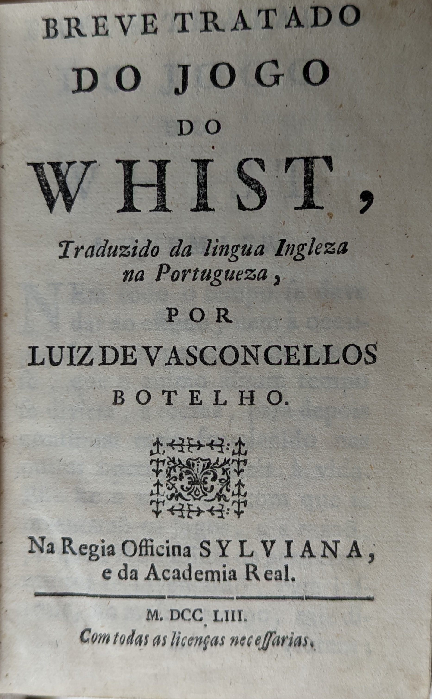

A Descriptive Bibliography of Edmond Hoyle
Copyright © 2014-26 by David Levy
(page updated 2023-11-17)User Guide
Whist.Pt.1
Breve Tratado do Jogo do Whist, Na Regia Officina Sylviana, first edition, 1753.
 |
Title: | BREVE TRATADO | DO JOGO | DO | WHIST, | Traduzido da lingua Ingleza | na Portugeueza, | POR | LUIZ DE VASCONCELLOS | BOTELHO. | [tailpiece] | Na Regia Officina SYLVIANA, | e da Academia Real. | [rule] | M. DCC. LIII. | Com todas licenças neceſſarias. |
| Collation: | 8o: A–I8 K8(−K6,7,8) [$1–2 signed]; 77 leaves, pp. [6 ] 1–148 [misprinting 90 as 80] |
| Contents: | Signature (Page) Reference | Contents | Signature (Page) Reference | Running Titles |
| A1r | title | |||
| A1v | blank | |||
| A2r–A3v | ‘BREVE TRATADO | DO JOGO | DO | WHIST. | A QUEMLER. | [...]’ | |||
| A4r–A7v (1–8) | ‘BREVE TRATADO | DO JOGO | DO | WHIST, | QUE CONTEM AS LEYS DO JOGO, | [...]’ | A4v–A7v (2–8) | ‘Breve Tradtado | do Jogo do Whist.’ | |
| A8r–B5r (9–19) | ‘BREVE TRATADO | DO JOGO | DO | WHIST. | [...] | CALCULAÇAÕ, | [...]’ | A8v–B5r (10–19) | ‘Breve Tradtado | do Jogo do Whist.’ | |
| B5v–K2v (20–142) | ‘CAPITULO I. | [...]’ | B5v–K2v (20–142) | ‘Breve Tradtado | do Jogo do Whist.’ | |
| K3r–K3v (143–144) | ‘LICENÇAS. | Do Santo Officio. | [...] 14 de Setembro | de 1752. | [...] 15 de Setem-|bro de 1752. | [...]’ | |||
| K4r–K4v (145–146) | ‘Do Ordinario. | [...] 22 de Setembro | de 1752. | [...] 25 de Setembro de | 1752. | [...]’ | |||
| K5r (147) | ‘Do Deſembargo do Paço. | [...] 7 de Outubro de 1752. | [...]’ | |||
| K5v (148) | Imprimatur dated 1752-10-12 |
| Catchwords: | G7r(103) o que [naõ] |
| Publisher: | Sylviana |
| Translator: | Luiz de Vasconcellos Botelho |
| Imprimatur: | ‘[...] | Lis-|boa, 12 de Outubro de 1752. | Marquez Preſidente, | Ataide. Mouraõ.’ |
| Copies Seen: | Levy [1865] |
| Other Copies: | private-Europe |